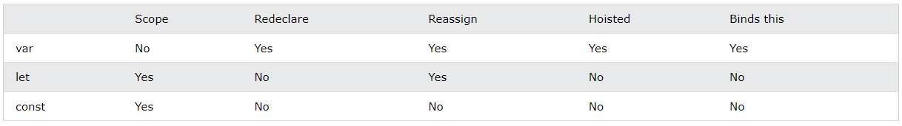

As palavras-chave let e const foram introduzidas no ES6 (2015). As variáveis declaradas com essas palavras-chave têm escopo de bloco, isto é, devem ser declaradas antes do uso e não podem ser re-declaradas no mesmo escopo. Variáveis declaradas com const também não podem ser reatribuídas.
const PI = 3.141592653589793;
PI = 3.14; // Isso gera um erro
PI = PI + 10; // Isso também
Reatribuir uma variável com const não é permitido.
const x = 2; // Permitido
x = 2; // Não permitido
var x = 2; // Não permitido
let x = 2; // Não permitido
const x = 2; // Não permitido
{
const x = 2; // Permitido
x = 2; // Não permitido
var x = 2; // Não permitido
let x = 2; // Não permitido
const x = 2; // Não permitido
}
Não é possível fazer o seguinte com let:
let x = "John Doe";
let x = 0;
var pode ser redeclarada em qualquer lugar do código. let e const podem ser redeclarados em outros blocos.
Redeclarar var ou let como const no mesmo escopo não é permitido:
var x = 2; // Permitido
const x = 2; // Não permitido
{
let x = 2; // Permitido
const x = 2; // Não permitido
}
{
const x = 2; // Permitido
const x = 2; // Não permitido
}
Porém, podemos redeclarar uma variável com const em outro escopo (ou bloco):
const x = 2; // Permitido
{
const x = 3; // Permitido
}
{
const x = 4; // Permitido
}
Antes do ES6, o JavaScript oferecia somente o escopo global e o escopo de função. Após a introdução do ES6, com as palavras-chave let e const, também temos o escopo de bloco. As variáveis declaradas com essas palavras-chave dentro de um bloco (definido por { }) não podem ser acessadas fora dele. Por exemplo:
const x = 10;
// Aqui x é 10
{
const x = 2;
// Aqui x é 2
}
// Aqui x é 10
Variáveis declaradas com a palavra-chave var sempre têm escopo global e NÃO podem ter escopo de bloco.
Variáveis declaradas com let NÃO podem ser re-declaradas, mas variáveis declaradas com var e const podem.
Com var, as variáveis redeclaradas dentro de um bloco são válidas também fora do bloco. Então podemos usar let para impedir esse comportamento, já que redeclarar a variável com let só funciona dentro do bloco.

let e const, já que têm escopo de bloco.let e const não podem ser redeclaradas.let ou const antes do seu uso.let e const não são "içadas", isto é não podem ser iniciadas a qualquer momento no código.let quando souber que seu valor será alterado no futuro.const quando souber que seu valor NÃO será alterado no futuro.var não precisa ser declarada antes do uso.var pode ser içada, isto é, pode ser iniciada a qualquer momento no código.Use const para declarar:
A palavra-chave const engana um pouco, porque não define, exatamente, um valor constante, mas uma referência constante a um valor.
Por causa disso, NÃO é possível:
Porém, é possível:
Podemos criar uma matriz constante:
const cars = ["Saab", "Volvo", "BMW"];
Alterar um de seus elementos:
cars[0] = "Toyota";
E adicionar um elemento:
cars.push("Audi");
Mas não podemos fazer isso:
const cars = ["Saab", "Volvo", "BMW"];
cars = ["Toyota", "Volvo", "Audi"]; // Isso gera um erro
Podemos criar um objeto constante:
const car = {type:"Fiat", model:"500", color:"white"};
Alterar uma de suas propriedades:
car.color = "red";
E adicionar uma propriedade:
car.owner = "Johnson";
Mas não podemos fazer isso:
const car = {type:"Fiat", model:"500", color:"white"};
car = {type:"Volvo", model:"EX60", color:"red"}; // Isso gera um erro
Como vimos anteriormente, variáveis declaradas com var podem ser içadas, isto é iniciadas a qualquer momento no código, mas não as declaradas com const ou let.
Isso significa que variáveis declaradas com var podem ser usadas antes de serem declaradas. Variáveis declaradas com const, se içadas, geram um ReferenceError.